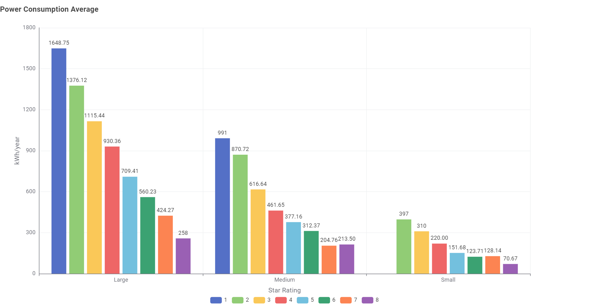

Among Australian TVs registered in the 2026 Energy Rating data, a
55 inch TV with a 1 star rating uses almost 1,000 kWh. But a model
of the same size with 6 stars or more uses only about 300 kWh, that
is more than 3 times the amount of energy and money saved.
Why this matters
Every television sold in Australia carries an Energy Rating Label.
The label shows a star rating and an estimated number of kilowatt
hours (kWh) used per year. The estimate comes from standardized
testing that assumes the TV is on for 10 hours a day, so it is a
way to compare models fairly, not a prediction of your own bill.
Multiply the kWh figure by your electricity tariff to estimate a
yearly running cost. This page uses 28.55 cents per kWh, the
average tariff quoted by the Energy Rating program. Your own
tariff will differ, so check your bill.
The data covers more than 4,500 approved TV registrations from 79
brands. Half of the models use less than 395 kWh a year, which is
about $113 a year at that tariff.
How to read the chart
Each bar represent the correspondent star rating and moving right
means a larger star rating, and moving up means more electricity
used per year. Each is categorized into small (less than 43"),
medium (44" to 65") and large (bigger than 66").

Figure 1. Annual energy use (kWh per year) against star
rating for each category of TVs. Source: Australian Government
Energy Rating data, file dated 15 February 2026.
What this means when you buy a TV
First decide how big a screen you really need, because size is the
biggest driver of running cost. Then compare star ratings only between
TVs of the same size, since that is where a higher rating translates
directly into a lower bill. Finally, weigh the purchase price against
the running cost over the years you will keep the TV. A TV that saves
$74 a year pays back a higher price tag over a typical TV lifetime.
Energy figures come from supplier-registered test results
and use a standard 10 hours a day. Cost figures use 28.55 cents per
kWh and your own use and tariff will differ.